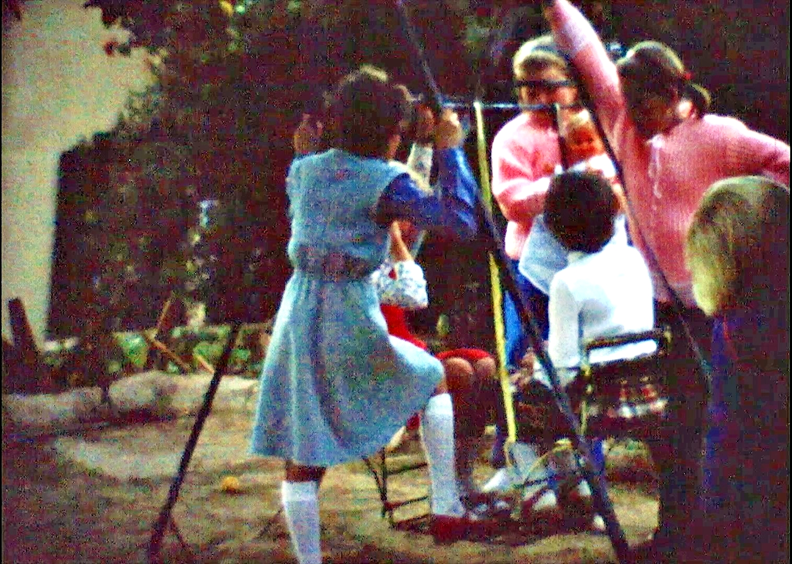
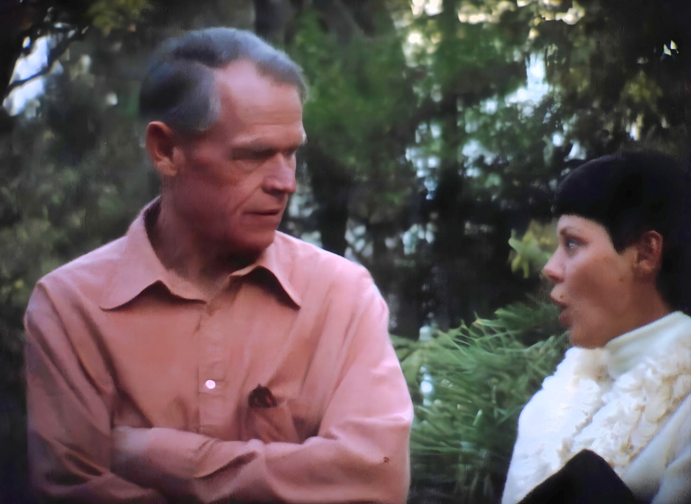
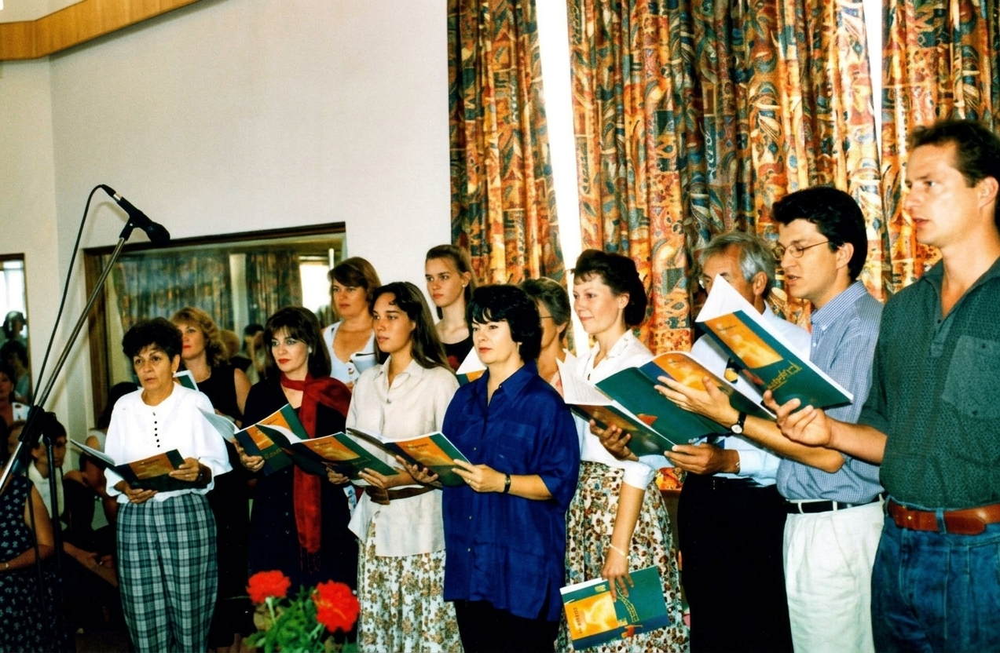
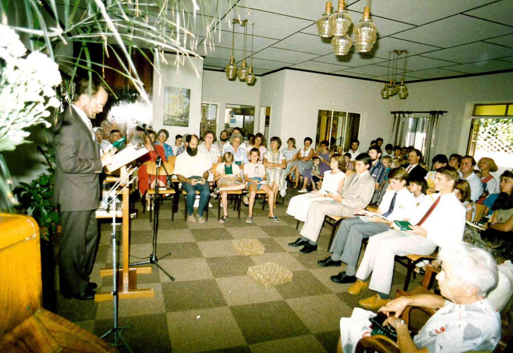
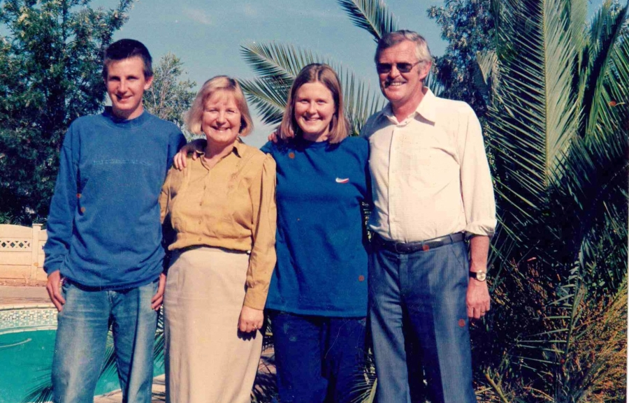
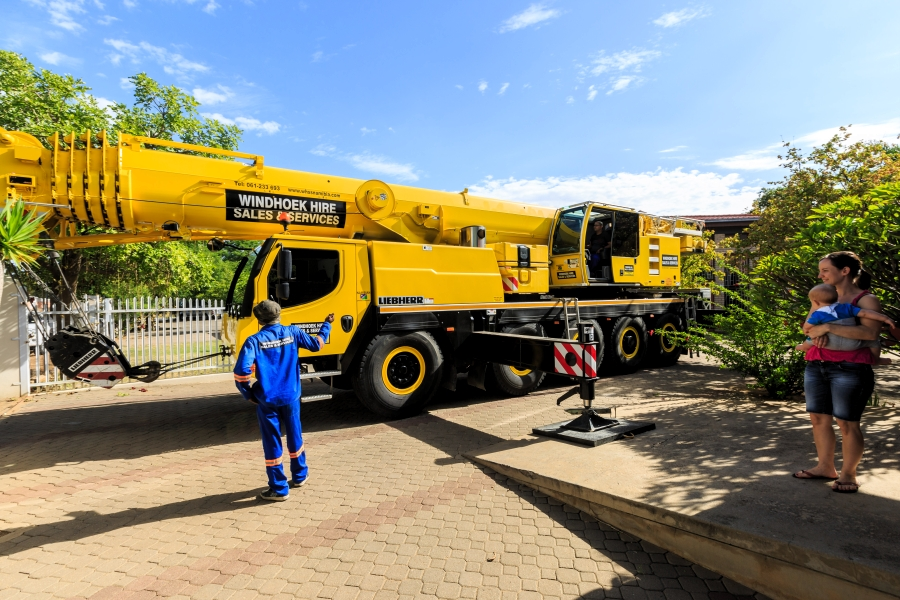

Familie Hechler im Garten 1984: Kinder Marc, Andreas und Miriam
Stami-Programm zu einer Zeit wo man Plakate noch von Hand oder mit der Schreibmaschine geschrieben hat
Fischfluss-Canyon Wanderung 1978. Mit dabei waren unter anderem Gernot von Grüter, Klaus Bäumler, Ernst Neef (später Missionsmitarbeiter in KwaZulu Natal), Albert Jahnke
Braai im Stadtmissionsgarten
Braai im Stadtmissionsgarten

Braai im Stadtmissionsgarten
Stadtmissionsgarten Kinderschar 1977 – mit Beate Hill. Vorne rechts sitzt Rudi Rüffler. Hinten rechts stehen auch Daudi und Klaus-Peter Koch

Braai im Stadtmissionsgarten
50 Jahre Stadtmission Windhoek
1981-1990
Bibelstunden im 24 qm grossen Zimmer im alten Stadtmissionshaus: in dem auch die offenen Abende und ab 1981 die Gottesdienste gelaufen sind. Dann wurde die Schiebetüren geöffnet und das Wohnzimmer mitbenutzt.
Bibelstunden im 24 qm grossen Zimmer im alten Stadtmissionshaus: in dem auch die offenen Abende und ab 1981/82 die Gottesdienste gelaufen sind. Dann wurde die Schiebetüren geöffnet und das Wohnzimmer mitbenutzt
Bibelstunden im 24 qm grossen Zimmer im alten Stadtmissionshaus: in dem auch die offenen Abende und ab 1981/82 die Gottesdienste gelaufen sind. Dann wurden die Schiebetüren geöffnet und das Wohnzimmer mitbenutzt
14 Gemeindeausflug Farm Hoffnung
Gemeindeausflug nach Farm Hoffnung mit vielen guten Bekannten und Freunden
Gemeindeausflug nach Farm Hoffnung mit vielen guten Bekannten und Freunden
Kinderstunde 1981 in der ehemaligen Garage
Kinderstunde mit Monika Pietzsch. 1984
Jugendraum Anfang 1984 noch bevor der neue Stadtmissions-Saal eingeweiht wurde
Jungendfreizeit im Namib-Naukluft-Park
Bau des Stadtmissionssaales im Jahr 1984
Bilder vom Bau des Stadtmissionssaales im Jahr 1984
Die Einweihung des Saales. Hans-Dieter Redecker hatte in der Bauzeit quasi die Bauleitung und Übersicht. darum übergibt symbolisch die Schlüssel zum Saal
Die Einweihung des Saales: Hans-Dieter Redecker hatte in der Bauzeit quasi die Bauleitung und Übersicht. darum übergibt symbolisch die Schlüssel zum Saal
Die Einweihung des Saale: Hans-Dieter Redecker hatte in der Bauzeit quasi die Bauleitung und Übersicht: darum übergibt symbolisch die Schlüssel
Die Einweihung des Saales: Hans-Dieter Redecker hatte in der Bauzeit quasi die Bauleitung und Übersicht: darum übergibt symbolisch die Schlüssel
Die Einweihung des Saales: Hans-Dieter Redecker hatte in der Bauzeit quasi die Bauleitung und Übersicht: darum übergibt symbolisch die Schlüssel
Nach der Einweihung des Saales
Gottesdienst mit Gastprediger Trauernicht
Gottesdienst im neuen Saal: Monika und Kinder
Gottesdienst – bekannte Gesichter und viele Jugendliche und Kinder
Gespräche vor dem Gottesdienst. Zu sehen unter anderem die Frauen Dannert
Taufe von Gisela Redecker während einer Osterfeizeit am Friedenau-Damm
Gemeindebraai bei Beilers auf ihrem Plot in Brackwater
Gemeindebraai bei Beilers auf ihrem Plot in Brackwater
36 Gemeindebraai bei Beilers
Mitgliederaufnahme einer der ersten war Ludwig Hester.
Farmgottesdienst Helmeringhausen im Garten der Familie Hester.
Horst u Monika Pietzsch: Monika geb. Bienk war zuerst Gemeindehelferin (1979 bis 82) und heiratete dann Co-Missionar/Prediger Horst Pietzsch (1982-1985 in Windhoek).
Hochzeit Horst und Monika Pietzsch
Kinderchor zur Hochzeit von Horst und Monika Pietsch. Erika Redecker dirigiert den Chor
50 Jahre Stadtmission Windhoek
1991-2000

Chor der Stadtmission: Ina Thomass, Lindi Kirsten, Karin Seiler, Roswitha Hosthemke, Birgit von Ludwiger, Helmuth Weinert, Heiko von Ludwiger, Helmut Basson
Hochzeit Gert Botha und Elke Mannschatz. 2000
Familie Trauernicht
Frauenstunde Stadtmission 1997-98

Konfirmation 1989 mit Horst Pietzsch in der alten Stadtmission
Konfirmation 1989 mit Horst Pietzsch: Oliver Horsthemke, Werner Morgenstern
50 Jahre Stadtmission Windhoek
2001-2010

Famiie Herbert Klimke: Anita und die 2 Kinder
Gespräch mit der Jugend
Jungscharlager
Konfirmation mit Johannes und Siegfried Eherler. 1.11.1998
50 Jahre Stadtmission Windhoek
2011-2020
40 Jahre Stami - Hannes und Hanni
Chor zur 40-Jahre-Feier der Stadtmission

Einzug Markus Obländer 2016
gemeinsames mittagessen 2017
Ordinierung Johanna Schwarz
Rudi Penzhorn Mai 2018
Rudi Penzhorn Ordinierung mit Wieland Müller Februar 2017
Schön geschmückter Saal 2016
50 Jahre Stadtmission Windhoek
2021-2026
Andreas und Claudia Bernhardt: Stadtmissionsehepaar 2020-2022